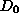
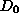
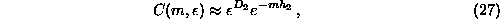
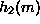
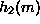
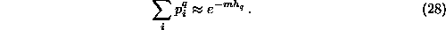
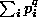
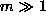
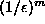
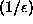

The correlation dimension characterizes the  dependence of the
correlation sum inside the scaling range. It is natural to ask what we can
learn form its m-dependence, once m is larger than . The number of
dependence of the
correlation sum inside the scaling range. It is natural to ask what we can
learn form its m-dependence, once m is larger than . The number of
 -neighbors of a delay vector is an estimate of the local probability
density, and in fact it is a kind of joint probability: All m-components of
the neighbor have to be similar to those of the actual vector simultaneously.
Thus when increasing m, joint probabilities covering larger time spans get
involved. The scaling of these joint probabilities is related to the
correlation entropy
-neighbors of a delay vector is an estimate of the local probability
density, and in fact it is a kind of joint probability: All m-components of
the neighbor have to be similar to those of the actual vector simultaneously.
Thus when increasing m, joint probabilities covering larger time spans get
involved. The scaling of these joint probabilities is related to the
correlation entropy  , such that
, such that

As for the scaling in  , also the dependence on m is valid
only asymptotically for large m, which one will not reach due to the lack
of data points. So one will study  versus m and try to extrapolate to
large m. The correlation entropy is a lower bound of the Kolmogorov Sinai
entropy, which in turn can be estimated by the sum of the positive Lyapunov
exponents. The program d2 produces as output the estimates of
, also the dependence on m is valid
only asymptotically for large m, which one will not reach due to the lack
of data points. So one will study  versus m and try to extrapolate to
large m. The correlation entropy is a lower bound of the Kolmogorov Sinai
entropy, which in turn can be estimated by the sum of the positive Lyapunov
exponents. The program d2 produces as output the estimates of  directly, from the other correlation sum programs it has to be extracted by
post-processing the output.
directly, from the other correlation sum programs it has to be extracted by
post-processing the output.
The entropies of first and second order can be derived from the output of
c1 and d2
respectively. An alternate means of obtaining these and the
other generalized entropies is by a box counting approach. Let  be the
probability to find the system state in box i, then the order q entropy is
defined by the limit of small box size and large m of
be the
probability to find the system state in box i, then the order q entropy is
defined by the limit of small box size and large m of

To evaluate  over a fine mesh of boxes in  dimensions,
economical use of memory is necessary: A simple histogram would take
 storage. Therefore the program boxcount implements
the mesh of boxes as a tree with -fold branching points. The
tree is worked through recursively so that at each instance at most one
complete branch exists in storage. The current version does not implement
finite sample corrections to Eq.( ).
).